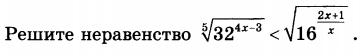
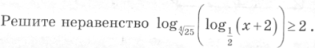
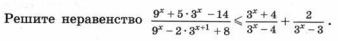
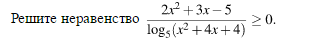

Для успешного решения задач такого типа необходимо умение решать рациональные, иррациональные, логарифмические неравенства, владеть методом интервалов и рационализации для неравенств.
1. 
Ответ
x ∈(– ∞;–1/4) ∪ (0;2)
2. 
Ответ
x ∈(– 2, -63/32)
3. 
Ответ
x ∈(– ∞;0]U(1;log34)
4. 
Ответ
x ∈(–∞;–3)U [–2,5;–2)U(–2;–1)U(1;+∞)
5.
Ответ
x ∈{1;2; 7;8;13}